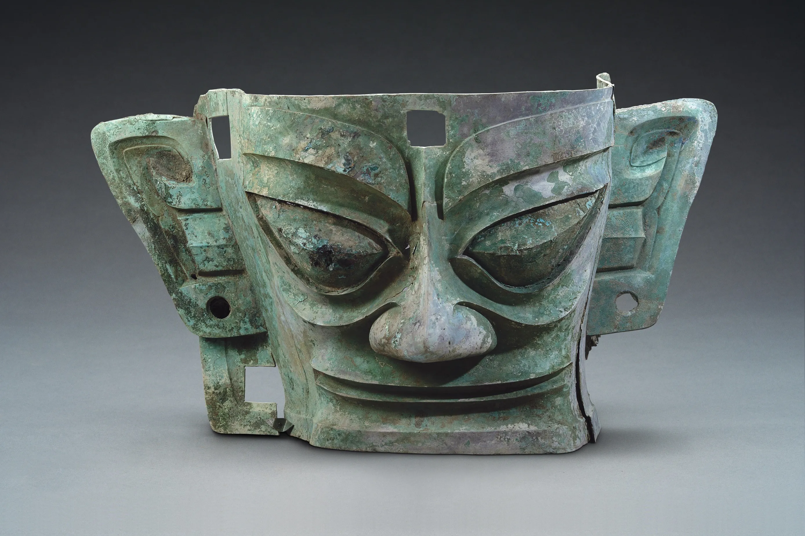

Written by Kirin Qi
惠山古镇环境优美，人文景色多样。同时它还成为了今年的春晚分会场。在这里你可以坐上小船，沿着小河看着岸边人来人往的喧嚣。当你走下小船，沿着石板小路前行，头顶着独属于江南的小灯笼，看着许多小店有惠山泥人、扎染……
在这里不缺诗情画意，小小店铺沿着河道分布，人们饭后走来一圈也可翻到不同的意向。在这里你不用担心票价之昂贵，在无锡这是免费的景点。惠山古镇依山傍水在山腰部分有着时代久远的小寺庙……
然而，惠山古镇也存在一些缺点。在一些节假日时候，往往人山人海存在安全隐患。例如当人们过多挤走在桥上，稍有不慎便会跌落河中成为“落汤鸡”。其次一些游客前来游玩时大都选择自驾，这也就存在停车不合理、长时间的堵车。实在令人心生烦躁！愿不久的将来，惠山古镇会给我们带来许多合理的措施！
Huishan Ancient Town is renowned for its beautiful environment and diverse cultural landscapes. It also served as a venue for 2025's Spring Festival Gala. Once you step off the boat and walk along the cobblestone paths, you'll find yourself adorned with small lanterns unique to Jiangnan, and admiring the sights of small shops selling Huishan clay figurines, tie-dye products, and more.
There is no shortage of poetic and picturesque scenery here. Small shops are scattered along the river, and people can find different intentions by walking around after dinner. You don’t have to worry about the expensive ticket price here, as this is a free attraction in Wuxi City.Huishan Ancient Town is nestled in the mountains and beside the water. On the hillside, there is a small temple that dates back to ancient times...
However, Huishan Ancient Town also has its drawbacks. During holidays, the crowds often create safety risks. For example, when too many people crowd onto the bridge, a careless person can fall into the river and become soaked. Furthermore, many tourists choose to drive, which leads to illogical parking and lengthy traffic jams and is truly frustrating! Hopefully, Huishan Ancient Town will implement more effective policies with safety and parking arrangements in the near future!